Firefly: Visualization
One primary component of the Firefly tools is the image visualization.
You can view and interact with image files, both FITS and HiPS
formats. This section covers interacting with the images -- the
visualization tools. Tables and Plots are in other sections.
All of the interactive image visualization tools work the same basic
way, and here we describe these basic options, in roughly the order
in which you might encounter them in the window.
Contents of page/chapter:
+FITS/HiPS Viewer
+Image Information
+Image Toolbar
+Information on Color Stretches
+Information on HiPS features
+Footprints
+Breaking out of the pane (and going back)
+Image Navigation
+World Coordinate System (WCS) Alignment and Releated
Features
+Coverage Image
+Automatic FITS-HiPS-Aitoff Transitions
You can interactively explore the image with the mouse. Move your
mouse over any image that is loaded into the viewer. Details about the
image and, specifically, the pixel beneath your mouse cursor, appear
likely somewhere near the top of the window with a variety of useful
items. Some information is updated in real time (such as coordinates);
some information (such as flux densities) is updated when you stop
moving your mouse for a second or two. The image can be interactively
investigated in this fashion. Here is one example from one Firefly
tool:
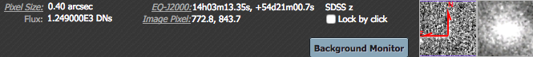
You can make it 'stick' on a
particular place on the image -- tick the "Lock by click" box and then
click on the image at your desired location.
The orientation of the image may also be given with a compass rose,
next to a zoomed-in view of the image under your cursor. If you can't
see all of these two displays, enlarge your browser window
slightly, or the tool you're using may not have these features.
The label of the image, typically on the upper left of the loaded
image, tells you basic things about the image you are viewing. The
telescope and/or instrument and/or channel and/or data release is in
black. The field of view is in green font; this corresponds to the
(horizontal) width of the image window.
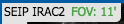 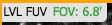 Two examples
of image labels. The former is from Spitzer Enhanced Imaging Products
(SEIP), IRAC channel 2, and the field of view is 11 arcmin. The latter
is far-ultraviolet (FUV) data delivered by the Local Volume Legacy
(LVL) project, and the field of view is 6.8 arcmin.
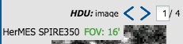 Images can have multiple planes;
the blue arrows shown here allow you to page through the planes. (This
is from the HerMES project and is Herschel SPIRE 350 micron data.)
For HiPS images, the FOV is is the angular size of the width of the HiPS
viewer. Even if the image as displayed is smaller than the window, the
FOV readout is the width of the window, not the image. If you shrink
your browser screen, the FOV can get smaller because the viewer gets
smaller. If you load more than one image, the FOV can get smaller
because two viewers must fit in the same pane. As a result, the HiPS
FOV requested in the search panel are approximate.
For FITS images, the FOV label on FITS images works analogously to the
FOV label on HiPS images. If you zoom out, the FOV will increase even
when the FITS image is entirely within the viewer. That's because the
FOV is what the viewer can show you based on the pixel size. If you
drag the image so that it is only partially seen through the viewer,
the FOV will not change. For FITS images, the cutout size is not the
same as the FOV.
The target on which you searched is overlaid on the main image with a
cross-hair marker: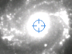 You can remove this (or
change its color) from the layers pop-up, described below.
Some information (like the title of the image) is also given
in the interactive exploration region described immediately above.
This region also includes additional information about the image (such
as the pixel scale and orientation).
The image toolbox may be always present as a row of tools, or may need
to be brought up by clicking on an icon like this: 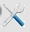. Letting your mouse hover over any of these icons will
result in a "tool tip" that appears in order to remind you what the
icon does. This information is also dynamically updated just to the
right of the toolbox itself. Most items apply equally to FITS
and HiPS images, but some (e.g., the color table/stretch) only apply
to FITS images.
This is the image toolbox when you have clicked on a FITS
image you have loaded:
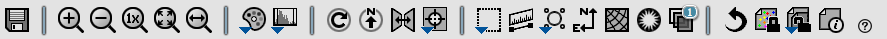
And, this is the image toolbox when you have clicked on a HiPS image
you have loaded:
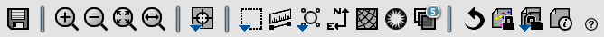
The two toolbars are different, but if the same icon appears, it has
the same effect on the image.
We now discuss each icon in turn.
 Saving the image.
Saving the image.
- The diskette icon will allow you to save the current image. You
can save files to your local disk or to the IRSA Workspace
 . Note that
you control where the file is saved on your disk through your
browser; your browser may be configured to
store all downloads in a particular location on your disk.
. Note that
you control where the file is saved on your disk through your
browser; your browser may be configured to
store all downloads in a particular location on your disk.
If the current image is a FITS file, you can save it as a FITS or PNG
or regions file to your local disk. If it is a HiPS file, your only
choices are PNG or regions file. Saved FITS images will not save the
color stretches or overlays; it will just save the underlying FITS
image. Saved PNG files WILL include any overlays or annotations you
have placed on the image, but will not include the underlying FITS
image. Saved regions files will not save the underlying image, but
will just save the overlays as a DS9 Regions file. See the DS9
website for more information on the syntax of these DS9 region
files.
Note that you can save the original or a cropped version of a FITS
file; see the "select region" icon below to crop, then click on the
save icon. Be sure to save the cropped FITS image (see annotated
figure). This feature is not available for HiPS images.
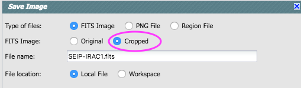
Note that if you overlay a catalog
consisting of tens of thousands of sources, then turn around and save
a regions file from the catalog overlay, then you will have fewer
sources in the regions file than you have in the full catalog. This is
a known issue.
The saved PNG is the same size as it is on your screen. If you want a
big version, make the desired image big on your screen (view
one-at-a-time) before saving the PNG.
- 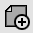 Selecting a new
image.
- This icon does not always appear. Clicking on this icon is the
same as selecting the blue "Images" tab. Click on this icon -- or the
blue Images tab -- to add a new image through a new search, or to
change the current image to a new image. To change a HiPS image, see
discussion in WCS section below.
- Zooming in or out.
-
Clicking on these magnifying glass icons zooms in or out of the image.
The readout of the net effect of your zooming on the displayed field
of view (FOV) appears at the top left of each image, in green.
If you click zoom in or out rapidly, a pop-up window appears to allow
you to more rapidly select the zoom level (field of view) you want.
Select the desired level, or click on the 'x' in the upper right to
make the window go away. Here is an example:
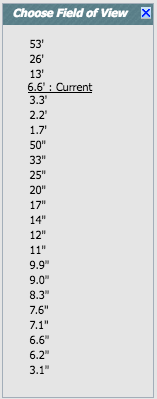
Note that there is a maximum (or minimum) allowed zoom level, and they
are different for FITS and HiPS images. A notification will appear
when you have reached the maximum (or minimum) allowed zoom level for
a given image. To enlarge images more (or less) than that, please
repeat your search to obtain new images with smaller (or larger)
spatial extent. HiPS images are specifically designed for large areas,
so if you need a big area, use HiPS. If you want to zoom in close
enough to see individual original pixels, your best choice is FITS.
See also the section below on changing coverage
images, specifically that on automatic transitions while
zooming.
- Zooming to a 1-to-1 size.
- Clicking this icon will zoom the image such that one pixel in the
image is one pixel on your screen. This option is only available with
FITS images; HiPS images by their nature have pixels of varying sizes,
so this button has no meaning in this case.
- 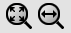 Fit image to screen or fill
screen
-
These two icons are designed to maximize the available space in your
browser window. The first one automatically picks a zoom level such
that the image entirely fits within the available space. The second
one automatically picks a zoom level such that the image fills as much
of the available space as possible (e.g., it is zoomed such that short
axis of the window is filled with the image, whether that short axis
is left-right or up-down).
By default, the images that are returned are frequently but not always
centered on your search target. Clicking on these icons let you see
the whole image that is returned, whether or not it is centered on
your target.
This is available for both FITS and HiPS images, though note that FITS
images retrieved from IRSA using this tool are typically square, and
HiPS images cover the sky, so fitting the image to the screen
might not be what you want to do.
- 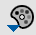 Changing the color table.
- This icon enables you to change the color table of the
displayed image. (This option is only available for FITS, not HiPS,
images.) When you click the button, a pull-down menu appears
with a wide variety of color table choices. Select your new color
table from the options shown:
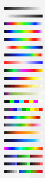
- 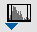 Changing the color stretch.
- This icon enables you to change the color stretch of the
displayed image. (This option is only available for FITS, not HiPS,
images.) For much more information, please see
below.
- Rotating the image to any
angle
- This feature allows you to rotate the image about the displayed
center of your image to any angle of your choice, in degrees. (This
option is only available for FITS, not HiPS, images.) It will rotate
the image counter-clockwise (to the left) East of North if the image
has a WCS embedded in it.
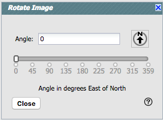
You
can type a number in the "angle" box, or use the slider, to rotate the
image. To bring it back to North-up, click on the "North up" icon in
the pop-up or in the main image toolbar. To exit the pop-up without
making further changes, hit the 'x' in the upper right of the
pop-up.
- Rotating the image so that North is
up.
- Images as loaded may not already be oriented such that North is
up, or close to it; North may not necessarily be up. Clicking this icon will
orient the selected image so that North is up. (This option is only
available for FITS, not HiPS, images.)
- Flipping the image on the y-axis.
- Clicking on this icon flips the image on the y-axis. (This option
is only available for FITS, not HiPS, images.)
- 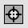 Re-center the image.
- Clicking this icon produces a pull-down menu:
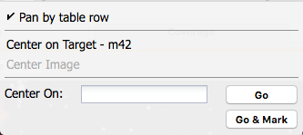
By default, "Pan by table row" is turned on, but, depending on how you
have loaded your images, or whether you have catalogs loaded, it may
not seem to do very much. If you have a catalog loaded and are zoomed
in on your images, as you scroll through your catalog, the
FITS image underneath will move and reload as needed when you have selected an
observation in a different part of the sky than was originally shown.
Other choices are to center on the target of the observation, center
the image in the window, or center on a target of your choice. For the
last of those, you can simply center on that target, or center and
leave a marker on the image at that location.
- Selecting a region.
- When you click this icon, you are right away given a choice of a
rectangular selection or an elliptical selection. After you make that
choice, at first, nothing seems to happen. But, now you can click and
drag in the image, selecting a box or an ellipse on the image. This
region can be resized by grabbing and dragging the corners of the box
or the pixels delineating the corners of a box around your ellipse.
You can make a new box right away by holding down the shift key and
clicking and dragging to select a new box. When you have selected a
region of the image, additional icons appear above the image, and
exactly which icons you see is a function of whether you are working
on a FITS or HiPS image: 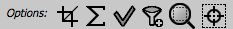 These icons will allow you to (from left
to right):
- (FITS only) crop the image to the selected region (then you can save the
cropped FITS image via the save icon described above);
- (FITS only) obtain statistics from the image on the region;
- select the catalog sources overlaid on the image within
the region (highlights the sources in the list and plot, if there is a
catalog overlaid);
- filter the overlaid catalog down to the sources within the enclosed
area (if there is a catalog overlaid);
- zoom the image to fit the selected area;
- recenter the images on the selected area.
You can save the cropped FITS image via the save icon (described
above). The statistics option results in a pop-up that
looks something like this:
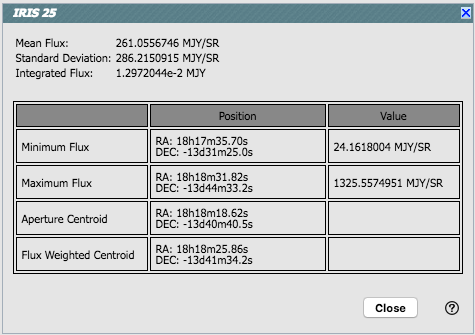
Note that it calculates the location of the minimum and maximum
fluxes, and the aperture and flux-weighted centroids. If you put your
mouse over the row of the table in the pop-up, that location appears
as an 'x' on the image. If you have a catalog overlaid, selecting
sources with this tool highlights them in the catalog list. You can
choose to impose a filter via this selection mechanism; the filters
icon changes above the catalog to indicate that there is a filter
applied (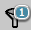). To clear the filters,
click on the cancel filters icon (which also appears after you impose
filters): 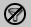. There is much more on filters in the tables
section.
Note that, if you have a rotated FITS image such that
a crop would have to bisect pixels, it will show you the region that
encompasses your selection. If you crop at that point, then, it will
crop in image space (such that pixels are not bisected). See the
figure below -- in the original image, north is up. This has been
rotated 45 degrees. The selected region is in white. The yellow
dash-dot line is the crop in pixel space that encompasses the selected
region.
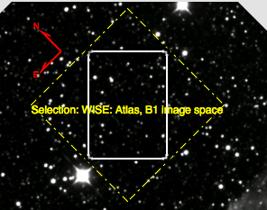
- 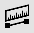 Measuring a distance.
- When you click this icon, at first, nothing seems to happen.
However, you can now click and drag to draw a line on the image, and
the length of the line is displayed (in the middle of the line). The
units for the measured distance (and the color of the overlay) can be
changed from the "layers" icon (described below). You can
calculate the difference in RA and Dec separately via the layers icon
as well; find the layer associated with the distance measurement and
tick the "offset calculation" box. When it displays the offset
calculation, it will give you the angle in degrees in one corner, and
the length of the line segment in the RA and Dec directions, in the
units you have specified. Clicking on this icon a second time removes
the distance tool. (You can also remove this layer via the layers
icon.)
- 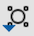 Put a marker on the image.
- When you click this icon, a pull-down menu appears with several
possible options:
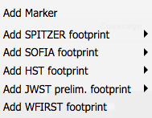
The first
overlay choice (simply called 'marker') is a red circle. Initially, it
appears in the center of the images, and is meant to be moved to
wherever you first click in the image. It looks like this: 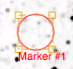. The dash-dot line around it means that it
is 'active', so you can move (click and drag the marker) or resize it
(click and drag the dash-dot boundary). You can change the color of
the marker (and change the label) via the "layers" icon (described
below). You can also remove this layer via the layers icon. There are
several additional options in the pulldown, enough that they have
their own section below.
Note that if you load both FITS and HiPS images at the same time, or
change between them in a tool that only loads one image at a time, it
will include a region on the HiPS image that is the footprint of the
FITS images you have loaded. A label appears at the center of that
footprint, which may be disconcerting if you are not zoomed out enough
to see the region itself. Here is an example from IRSA Viewer, zoomed
out so it is clear what is going on:
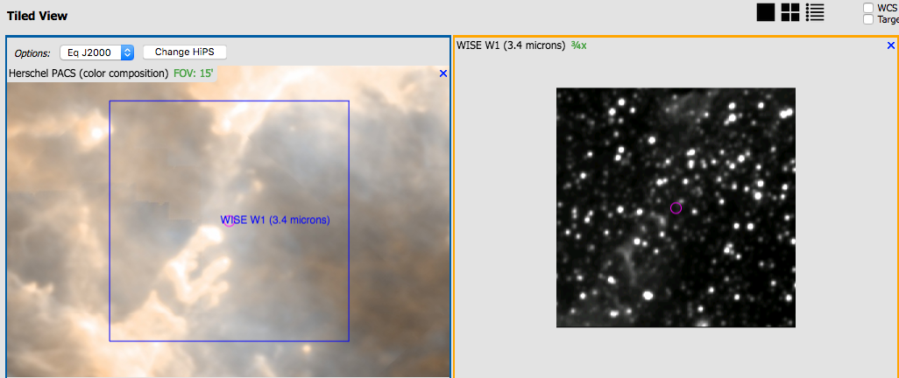
- 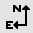 Add a compass rose
- When you click this icon, arrows appear on the image showing
which direction is North and which is East. Clicking on this icon a
second time removes the compass rose. (You can also remove
this layer via the layers icon, described below.)
- 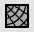 Add a coordinate grid.
- Click on this icon to overlay a coordinate grid on the image.
(Only available for FITS images, not HiPS, but see information on HiPS
grid in the WCS section below.)
Click it again to remove it. Customize the units of the grid (to,
e.g., Galactic coordinates) via the "layers" icon (described
below).
- Read in a DS9 Regions file
- When you click this icon, you get a pop-up window from which you
can read in a DS9 regions file from your local disk. See the DS9 website for more information on the syntax of
these DS9 region files. The supported regions are text, circle, box,
polygon, line, and annulus. To make this window go away without doing
anything, click on the 'x' in the upper right of the pop-up.
- 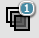 Viewing/changing the layers on the
image.
- If you've been following along by trying these various options,
you now have an image with a lot of annotations on it. The number that
appears in blue over the layers icon tells you at any given time how
many layers you have on the currently selected image. If you click
this icon, you will get a pop-up window with a list of all the layers
you have on top of the image. From the pop-up, you can turn layers off
and on, at minimum, but you can often also change exactly what is
displayed and what colors get used for it. To add new things, though,
you need to go to other options within the toolbar. Here is an example
of a well-populated layers pop-up.
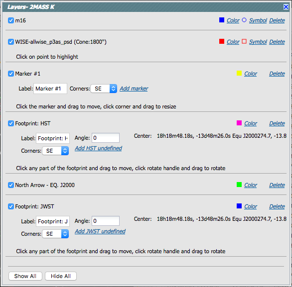
Note the target description: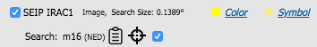
This reminds you
of the target on which you searched -- here, it was M16, where the
coordinates were resolved by NED (as opposed to Simbad). The two icons
next in that row indicate, respectively, "copy this location to the
clipboard" and "center image on this position." The tickbox here means
"show this target" (as opposed to the tickbox at the left, which means
"show this image").
Where it's possible to change colors of a layer, click on
the 'colors' link to be taken to a new pop-up from which you can
select a new color. For catalogs or the search target, you can also
select the symbol shape and size:
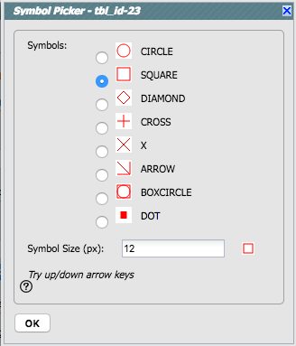
To adjust the size, type in the symbol
size in pixels or use the up/down arrow keys to change the size by one
pixel at a time. Click OK to implement your choices.
To delete a layer, click on "delete." Some layers do not have that
option; to remove that layer, click on the corresponding icon from
which you added that feature. Alternatively, you can "show all" or
"hide all" with the buttons on the lower left of the pop-up window.
To make this pop-up window go away, click on the 'x' in the upper
right of the pop-up.
- 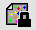Lock/unlock image color tables
and overlays
- When this is set to "lock", all the images that you have loaded
are linked together for color tables and overlays. This image lock is
turned on by default. You can click on this icon to turn off this
linkage among the images, enabling you to change images on an
individual basis. Click it again to re-enable it.
- Lock/unlock images
- This icon does not always appear. Depending on what you've done to
this point, and what view you have of the images you've loaded, you
may have this "lock images" icon appear in your toolbar. The main
purpose of this icon is to lock all the images you have loaded for
zooming, scrolling, etc. You need to specify how it locks and for how
long. Clicking it produces this pull-down menu:
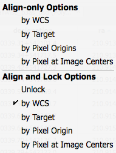
The first set of options aligns the images only once; the second set
of options makes the alignment persist ("lock") when you move the
images. You can align by the images' WCS (e.g., RA and Dec), by the
target, by the pixels according to the origin of the coordinate system
in the image header, or by the pixel at the image center. The most
common choice is likely the WCS align and lock. You can align FITS and
HiPS images to each other. This is discussed in more detail in
the WCS section below.
- Restoring everything to the
defaults
- If you've played around a lot with the image, you may want to undo
everything you've done. Click this button to restore everything to
their original default values. Some layers may persist; remove them
via the layers icon described above.
- 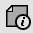 Viewing the image header.
- This icon displays a pop-up window with information about the
image. If a FITS image is selected, it will show the FITS header of
the image; if a HiPS image is selected, it will show the HiPS
properties of the image. If you click on the columns in the pop-up, it
will sort the keywords alphabetically by that column. This is useful
for finding individual keywords in particularly densely populated FITS
headers. Click the header again to sort in reverse-alphabetical order,
and a third time to return to the default order. Below are examples of
an original and sorted FITS header. To make this window go away,
click on the 'x' in the upper right of the pop-up, or click "close" on
the bottom.
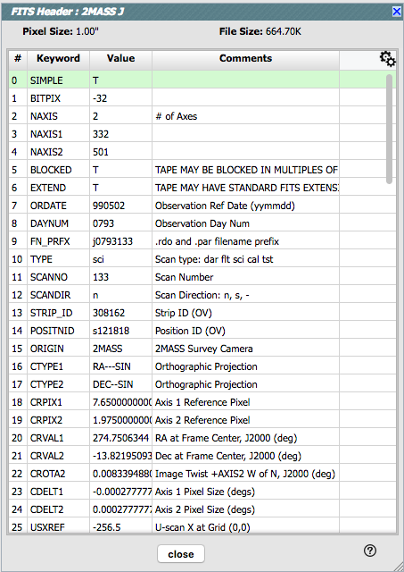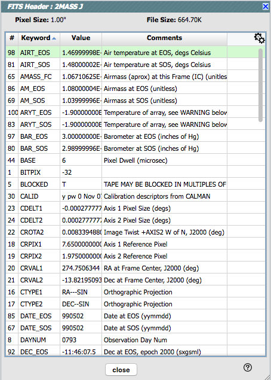
Further, you can click on the gears in the upper right of the window
to bring up a dialog box via which you can filter down the header
keywords (using the same syntax as the other filters):
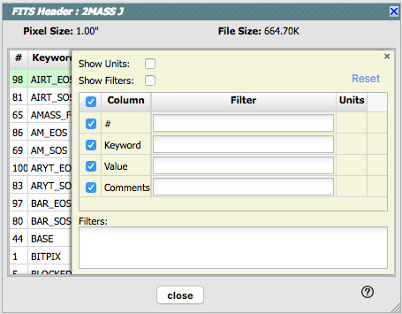
An example of the HiPS properties window is here:
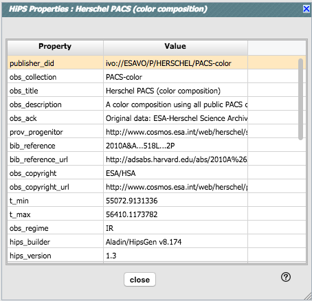
- Getting help.
- Clicking on this icon takes you to this help page.
To remove an image (or catalog) entirely, click on the small 'x'
in the upper right of the image in the tiled view, or on the small
'x' in the corner of the image (or catalog) tab in the window
pane view.
Specific information on Color Stretches
This icon enables you to change the color
stretch of the displayed image. (This option is only available for
FITS, not HiPS, images.) When you click the button, a pull-down menu
appears with a variety of choices. You can choose from a set of
pre-selected options:
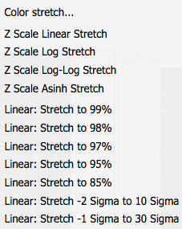
If you
pick the first one, "color stretch", you can customize the stretch. A
pop-up window appears with a histogram of the values in the image, and
you can change the stretch type and range.
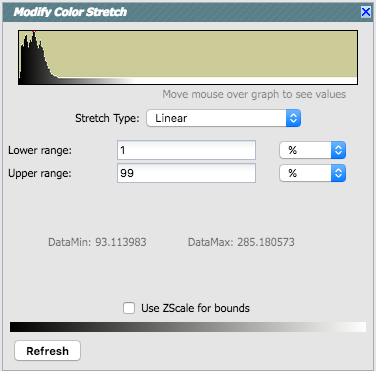
If you pick a color stretch from the
pre-defined options, the pop-up window reflects this change.
Example: pick 'Linear stretch to 99%'. Go back to "color stretch".
Note that it has filled out the stretch type and ranges to reflect the
current choice. Then -- either with the pop-up window still up or not
-- go back and pick a different pre-defined stretch from the standard
options. Note that the values in the pop-up change to reflect this
current choice.
If you have a 3-color image, you can change the stretch in each color
plane separately; select the tab at the top accordingly for red,
green, or blue. By default, it stretches each band independently, and
you can set the parameters in the stretch pop-up accordingly.
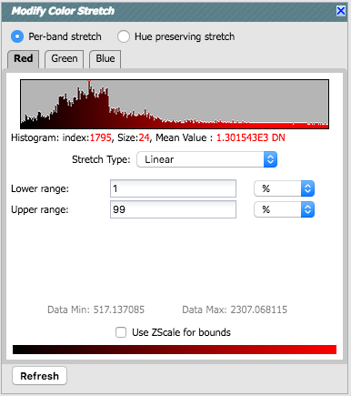
As described in Lupton et al. (2004) , a different algorithm may be
useful for creating 3-band color images. Select "Hue preserving
stretch" to invoke this option. This stretch should be a
brightness-independent color-preserving asinh stretch, though in
practical terms, it seems to work best for optical images.
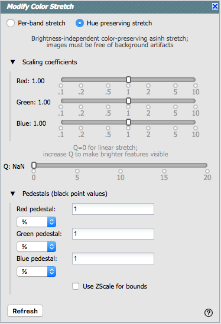
It may be useful to scale individual channels; sliders allow you to do
so. The Q parameter has another slider. For a linear stretch, Q=0;
increase Q to change what features are emphasized. Pedestal values can
also be set to allow the level assigned to "black" to change.
Specific Information on HiPS Features
HiPS (hierarchical progressive survey) images are
different than FITS images, and as such, the choices of what you can
do with the HiPS images are different than what you can do with the
FITS images. Choices you can make for HiPS images are sometimes
different than what you get for FITS images.
The whole point of HiPS images is to provide on-demand resolution
changes. Zoom out, and it loads large pixels. Zoom in, and it loads
smaller pixels. HiPS images are designed to cover large areas of sky
efficiently. If you need to visualize many degrees, this is the image
type to use.
There are HiPS images from all over the world; the complete list of
HiPS images available from the IRSA Viewer search page includes (once
the "IRSA Featured" checkbox is unchecked) many HiPS images from CDS .
HiPS images have the color and stretch set by the person who
originally made them. Thus, you cannot change the color/stretch of
HiPS images from within IRSA Viewer. This is why there may be multiple
versions of some data sets in the list of HiPS images.
You can't save HiPS images from within Firefly tools. To download your
own copy, you will have to track down the original source of the
image.
Footprints
The marker icon () has a pull-down menu with
several possible options:
Any
of the options with an arrow on the right can expand to additional
subsidiary choices, e.g.,:
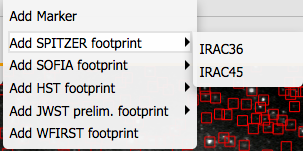
We now describe these various footprints here.
For each of these choices, the markers appear initially in the center
of the loaded images. The first mouse click you make in any of the
images will move the marker to that location.
Each of these marker choices, when overlaid and/or selected as
'active', has a dot-dash square around it. If it is asymmetrical (most
of them are), it has an additional "appendage" and a red plus at the
center of the footprint:
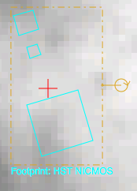
These so-called "handles" allow you to resize and/or rotate the
marker, depending on the nature of the marker. These handles only
appear when the marker is selected as active; if you wait a few
seconds, they vanish.
Troubleshooting and Tips:
- Some of these footprints are large. If you have a small
image, some of these footprints will be larger than your image. Zoom
out to see it, or find a larger image to use. If you overlay, say, a
WFIRST footprint on a 2MASS image, you may need to zoom out a
considerable amount before you can see the WFIRST footprint. You will
see the center indicator of the marker before you will see the WFIRST
footprint itself.
- You can add multiple copies of the same marker using the layers
pop-up (described generally above). From the layers pop-up, there is
a link right under the 'angle' option that says "Add [marker type]" --
click on that to get an additional marker of the same type. You can
also add a label to the marker from the layers pop-up, or change its
color.
- If you have many footprints on the same image, you may have
trouble grabbing and moving footprints lower in the stack of layers on
the image. For example, overlay footprint 1, then footprint 2, and you
might have a hard time grabbing and rotating footprint 1 after
footprint 2 has been added. The only workaround here is to use the
layers pop-up (described generally above) to hide footprint 2, then
move footprint 1, then restore footprint 2.
- If you have images of very different resolutions loaded
(e.g., IRAS and really anything else), sometimes it struggles to
render the marker on each image. You may need to place markers on one
image at a time. (Unclick the "lock overlays" button to place markers
one image at a time.)
The first overlay choice (simply
called 'marker') is a red circle.
The remaining markers are all footprints from various telescopes:
Spitzer, SOFIA, HST, JWST, and WFIRST. HST, JWST and WFIRST are
derived from information provided via MAST (see http://gsss.stsci.edu/webservices/footprints/help.html.)
For JWST and WFIRST in particular, they are pre-launch values.
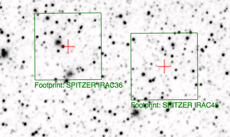 Spitzer/IRAC 3.6 and 4.5 micron
footprints. These two footprints are placed separately
from each other. The footprint can be moved or rotated. Click and drag
the center of the footprint. A circle appears with four small circles
("handles") around it. Grab and drag the small circles to rotate it,
or drag the big circle to move it. Change the color, delete, or add
more copies of the IRAC footprints from the layers pop-up.
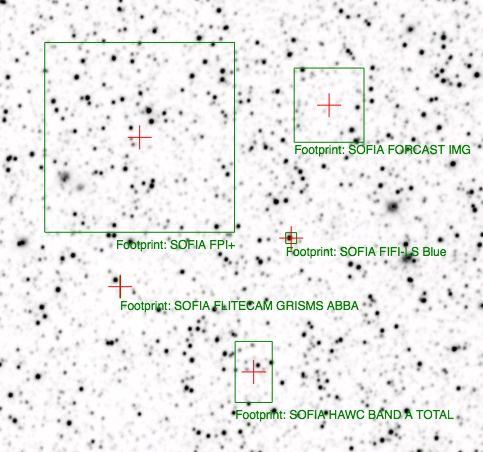 SOFIA footprints.
Several different SOFIA footprints are available; the graphic here
shows a selection of them. The available footprints (all of which are
placed separately) are:
- FIFI-LS
- Blue (50-120 microns)
- Red (110-200 microns)
- FLITECAM
- Imaging
- Grism ABBA
- Grism AB
- FORCAST
- FPI+
- HAWC+
- 53 microns (Band A), Total Intensity
- 53 microns (Band A), Polarization
- 89 microns (Band C), Total Intensity
- 89 microns (Band C), Polarization
- 154 microns (Band D), Total Intensity
- 154 microns (Band D), Polarization
- 214 microns (Band E), Total Intensity
- 214 microns (Band E), Polarization
Change the color, delete, or add
more copies of the SOFIA footprints from the layers pop-up.
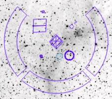 HST footprints.
You can overlay the whole focal plane footprint, shown here, or
individual instrument footprints (NICMOS, WFPC2, ACS/WFC, ACS/HRC,
ACS/SBC, WFC3/UVIS, and WFC3/IR). Consult the HST
documentation for specifics on which apertures are which. The
footprint can be moved or rotated. Click and drag the center of the
footprint. A circle appears with four small circles ("handles") around
it. Grab and drag the small circles to rotate it, or drag the big
circle to move it. Note that if you overlay the
footprint on a very small image, nothing will appear to have happened.
You need at least a 45 arcmin image to comfortably see the footprint.
Change the color, delete, or add more copies of the HST footprints from
the layers pop-up.
JWST footprints.
You can overlay the whole focal plane footprint, shown here, or
individual instrument footprints (FGS, MIRI, NIRCAM, NIS, and NIRSPEC).
Note that if you overlay the footprint on a very
small image, nothing will appear to have happened. You need at least a
30 arcmin image to comfortably see the entire JWST focal plane. Please consult the JWST documentation for details
about the footprints. In all cases, if the footprint is 'active', a
circle near the middle of the footprint will appear with four small
circles ("handles") around it. Grab and drag the small circles to
rotate it, or drag the big circle to move it. Change the color,
delete, or add more copies of the footprints from the layers pop-up.
WFIRST focal plane
footprint. As above, the footprint can be moved or rotated.
Click and drag the boresight (the cross hairs), which appears by
default to the upper right of the array of squares. A circle appears,
centered on the boresight, with four small circles ("handles") around
it. Grab and drag the small circles to rotate it, or drag the big
circle to move it. Note that if you overlay the
footprint on a very small image, nothing will appear to have happened.
You need at least a 60 arcmin image to comfortably see the footprint,
and even then you will probably have to click and drag to see the
entire footprint. Consult the WFIRST documentation for
specifics on the apertures. Change the color, delete, or add more
copies of the WFIRST footprint from the layers pop-up.
Breaking out of the pane (and going back)
Panes: If you have both images and catalogs loaded
into Firefly tools, your screen may be broken up into panes -- at least
one for images, one for catalogs, and one for plots from the catalog.
If you have more than one image loaded in, the image pane can be further
subdivided.
Make it big! For some purposes, it is useful to
individually view just the table, or the images, or the plots, as
large as possible. In any pane, this icon  appears in the upper right of the pane.
Clicking on it will expand the pane into a larger window, as big as
possible given your browser size.
appears in the upper right of the pane.
Clicking on it will expand the pane into a larger window, as big as
possible given your browser size.
Go back the way it was: The
large "Close" arrow at the upper left is frequently available in the
expanded views, and enables you to return back to the pane view. You
may or may not have this option, depending on the specific
implementation of Firefly you are using.
Special case of images only: If you have only images
loaded in, then the images are taking up all of your browser window,
and it is already, by default, in this expanded mode. There's no
'close' arrow in the upper left since there is nothing else loaded
in.
Removing things: To remove an image (or catalog)
entirely, click on the small 'x' in the upper right of the image in
the tiled view, or on the small 'x' in the corner of the catalog tab
in the window pane view.
Also see the next section on image navigation.
Image Navigation
Single or Tiled Images
Depending on your tool, when you have many images loaded in, you can
have icons like this: that portray
(in icon form) the different views you can have of the images you have
loaded. The first icon (the big square) denotes "show one image at a
time." The second icon (the cluster of four squares) denotes "show
smaller images of all the images I have loaded at once," e.g., tiled
images. Whether the images (tiled or not) take up all the space or not
depends on whether you are viewing in panes or in the full-screen mode
(see immediately above on Breaking out of the
pane).
Image List
Depending on what tool you are using and what you have loaded, you may
have an additional icon:
Clicking on
this icon brings up a list of the images you have loaded, with some
additional information on each one. This is another Firefly table, so you can interact with it using all of those same tools.
Paging through single image views
If you have many images loaded in and click on the single big square
to view one image at a time, you are provided with navigation aids in
the upper right, like this:
The arrows allow you to scroll through your list of images, sorted as
specified in the image table. The green dot in the list of blue dots
shows you where your currently displayed image is in the set of loaded
images. The "auto play" tick box triggers automatic scrolling through
each of the loaded images.
World Coordinate System (WCS) Alignment and Related
Features
As described above, there are two different lock buttons on the image
toolbar, one () for the color
table/stretch/overlays, and another, different one () for WCS matching. This section describes
the image locking in more detail.
The main purpose of having lock buttons at all is to make it easier to
change color tables for everything at once, or to zoom/scroll all the
images at once.
To use either of the locking buttons: Select an image by clicking on
it; note that your selected image is outlined in orange. Lock by color
and then change the color table in that selected image; all the images
change color tables. Lock by position and all the images align
to the same scale as your selected image.
Aligning images by position on the sky is likely to be the most common
use of locking. You can align FITS and HiPS images to each other.
When you have locked the images, if you zoom, click-and-drag, etc.,
then all the images move together. This option only makes sense if all
of your loaded images are of the same region of sky. You may have
images loaded from many different targets or other situations where
you likely you don't want all of the displayed bands to change
together, which is why locking by position of any sort is an option
distinct from locking color tables.
When aligning images, you can specify how the images align and for
how long. Clicking the lock images icon produces this pull-down
menu:
The first set of options aligns the images only once; the second set
of options makes the alignment persist ("lock") when you move the
images.
You can align by the images' WCS (world coordinate system,
e.g., RA and Dec), by the target (align by target on the screen,
regargless of position in the sky), by the pixels according to the
origin of the coordinate system in the image header, or by the pixel
at the image center. The most common choice is likely the WCS align
and lock.
Here are examples of different alignments, left to right: align by
WCS, by pixel origin, and by pixel at image centers.
Note that aligning by WCS puts North up, and aligned so that each
image has the same angular scale.
In contrast, here is an align by target - several different spiral
galaxies, but the target used for each image is in the center of each
image tile.
HiPS Grid
Once you have loaded a HiPS image into the IRSA Viewer, if you click
on the layers icon (), you will have
new, HiPS-specific choices in the layers:
To turn on these choices, click the checkbox to the left of "HEALPix
(HiPS) Grid".
Auto: This option overlays a position grid, with the
tile numbers marked in the center of each box. As you continue to zoom
in, when smaller tiles are needed, they are drawn, with the new tile
numbers marked. You may not zoom beyond HiPS Norder level 14 tiles.
The numbers after the "/" is in the "NESTED" (as opposed to RING or
NUNIQ) numbering system; see the IVOA
standards document for more information.
Grid Match Image Depth: If you select this option,
the grid will adjust to a new level when you zoom in and a new level
of HiPS image both exists and is used for the display.
Grid Level Lock: Selecting this option yields an
additional numerical pull-down menu. The higher number you pick, the
smaller the grid boxes are that are drawn. When this option is
selected, the boxes stay the same size regardless of how zoomed-in on
the image you are.
Coverage Image
Depending on your tool, you may have an image loaded that it has
picked on your behalf. This image is labeled "coverage" because it is
meant to display on the sky the range of things (sources,
observations, etc.) you have loaded into your tool.
This image could be FITS, HiPS, or Aitoff. Your tool may have the additional capability to dynamically change among them; see the next subsection.
Automatic FITS-HiPS-Aitoff Transitions
Depending on your tool, you may have an image loaded that it has
picked on your behalf. This image is labeled "coverage" because it is
meant to display on the sky the range of things (sources,
observations, etc.) you have loaded into your tool.
Coverage images can have many choices;
it could look something like either of these screen shots. In this
section, we cover these choices from left to right.
Type of image.
- An Aitoff projection (selected in the first example, indicated with the
darker grey) is an all-sky projection (in this case, a DIRBE 60 micron
image). This is showing the results of an all-sky search; if you
searched a smaller region, you may not have Aitoff as an option.
- A search over a large region might result in a HiPS image, or you
can force it to give you a HiPS image by clicking on "HiPS" in the
upper left of the coverage image. It will load a HiPS image
corresponding to your current target. HiPS images are
created specifically to enable fast, dynamic resolution changes; zoom
in and find smaller pixels than if you zoom out. HiPS images are
designed to cover large areas of sky efficiently. HiPS images are
limited to the color and stretch set by the person who originally made
them. Choices of what you can do and what you can manipulate with HiPS
images can be different than your choices for FITS images.
- A search over a small area will result in a FITS image, or you
can force it to give you a FITS image by clicking on "FITS" in the
upper left of the coverage image. It will select a FITS image
corresponding to your current target.
Automatic changes
FITS images are best for small regions of the sky. HiPS images are
best for large regions of sky. Aitoff projections are best for
viewing the entire sky at once. If you tick the "Auto" box and then
zoom in or out, the viewer will automatically toggle between image
types as needed. Zoom in enough, and it will swap from HiPS to
FITS. Zoom out again enough, and it will swap from FITS to HiPS.
Note that if you swap between HiPS and FITS and back again, it
will include a region on the HiPS image that is the footprint of the
FITS images you had just loaded. A label appears at the center of that
footprint, which may be disconcerting if you are not zoomed out enough
to see the region itself. Here is an example, zoomed out so it is
clear what is going on:
Coordinates
The pulldown menu allows you to select between coordinate systems.
Used in conjunction with the image readout and/or the coordinate
layer button (both described above), you can change what coordinate
system it uses.
Change HiPS
As seen in that screen snapshot just above, the choices made by
the creator of this HiPS image result in the brightest region of M42
(here indicated by the target marker) being saturated. Color tables and
stretches are set by the creator of the HiPS map and cannot be
changed. If the HiPS map as shown does not suit your needs and you
wish to change the HiPS image, click on the "Change HiPS" button, seen
in the screen shot above. It brings up this pop-up:

Things to note:
- To select a new image, click on the row corresponding to the new
HiPS image you want, and click "Search" on the bottom left.
- To cancel without selecting a new image, click "Cancel."
- This is a Firefly table, so all the filtering and column manipulation
tools apply here too. You can filter down the columns to find the image
you want to use.
- To learn more about each HiPS map, click on the i with the circle
in the second column. It will spawn another window with standardized
information about the HiPS map.
- By default, it shows HiPS maps corresponding to IRSA data
collections. To see a more comprehensive list, unclick the box marked
"IRSA Featured."